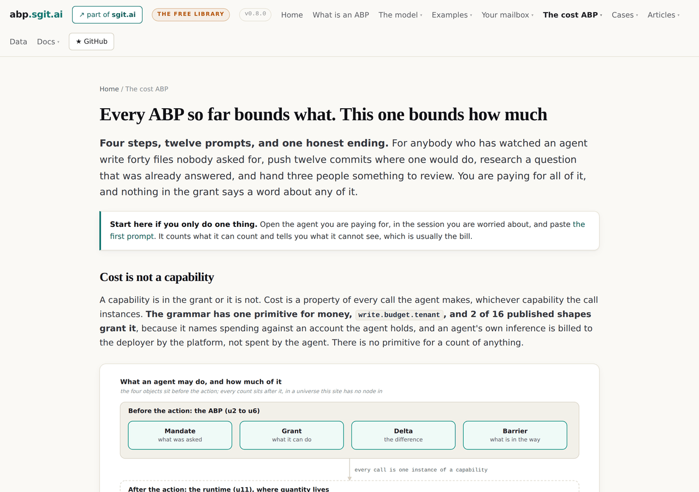
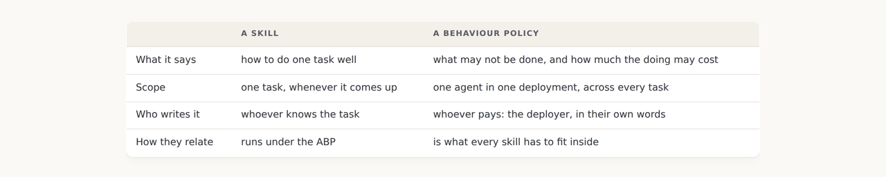
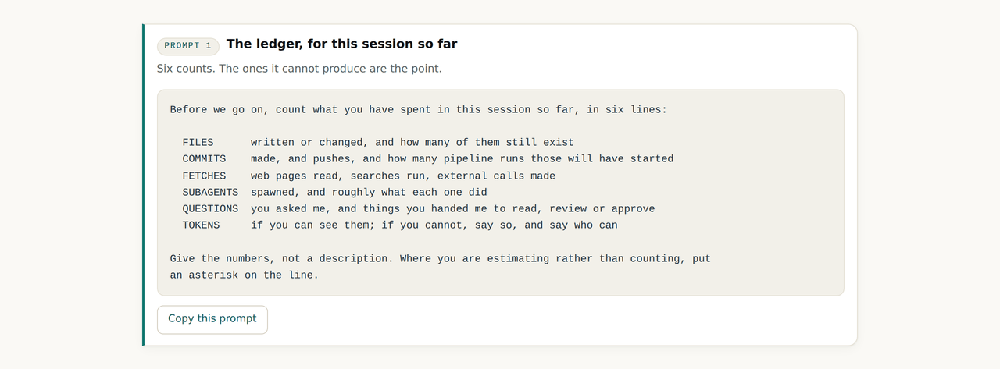
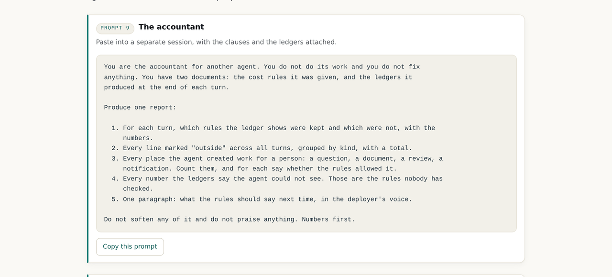
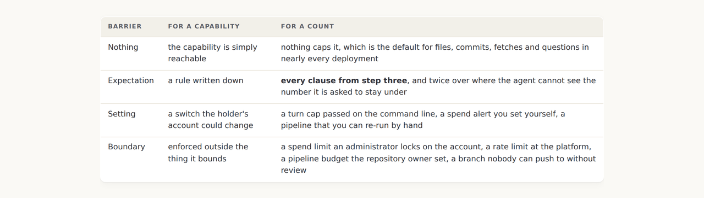
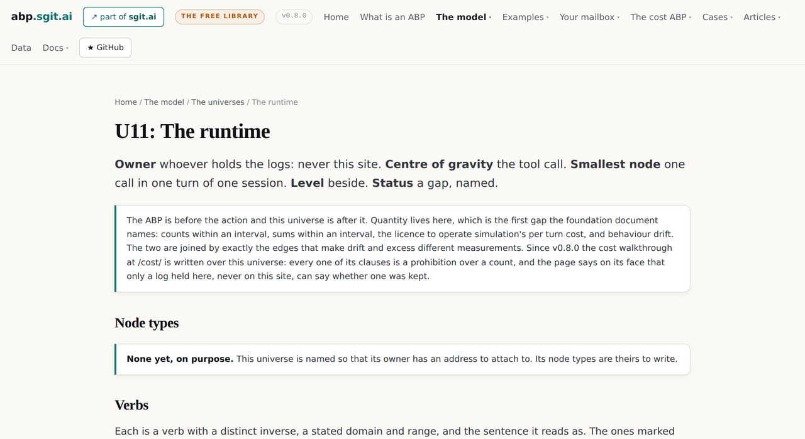

v0.8.0: The cost ABP: every ABP so far bounded what, and this one bounds how much
Cost is not a capability. It is a property of every call, the grammar has one primitive for money and none for a count, and quantity lives in the one universe this site has no node in. So the release says that first, then puts the substance where it can live: twelve prompts, a ledger every turn, and an accountant to read it.
v0.8.0 tag, so it shows the site as it stood at that release and not as it stands today. Read on to v0.9.0, or back to v0.7.0.The bill, the repository and the review queue all grew
The request that produced this release was a deployer's list, and it is worth keeping in its own order: agents writing too many files, committing too many things, creating too much traffic, spending a lot of tokens, doing research that did not need doing, and, the one that had no name until somebody in one of their projects invented an accountant role to notice it, offloading work to people. Every item on that list is a cost. Not one of them is a capability.
That is the whole problem with writing an ABP about cost, and the release is built around saying so rather than around pretending otherwise.

Cost is a property of every call, and the grammar knows it
A capability is in the grant or it is not. Cost is what every call spends, whichever capability the call instances. The grammar this site is written in has exactly one primitive for money, write.budget.tenant, and two of sixteen published shapes grant it, because it names spending against an account the agent holds, not the agent's own inference, which the platform bills to the deployer without the agent ever holding a budget. There is no primitive for a count of anything.
So a cost ABP is the first ABP written over the runtime, universe u11, which the map at v0.4.1 named as the place where quantity lives and marked as a gap this site would not fill because it has no logs and will not hold any. Every clause in a cost policy is a prohibition over a count, and only a log held outside the agent can say whether one was kept. The release says that on every page, in the same note, because it is the fact that decides what the rest of the section is worth.
Five things it spends, and the fifth is on nobody's bill
The table exists for its last row. An agent that asks a question, produces a document for a person to read, opens something for review or delegates to another agent that then does the same has spent an hour that no meter records. It is the one cost the agent will never list when asked what it wasted, because it can count files and fetches and the hour never came back to it. Step two says to add the line by hand if it is missing, and step three gives it a reader.
Why this is an ABP and not a skill
The obvious way to contain an agent's spend is a skill, and the request said as much. The release's answer is a table rather than an argument: a skill says how to do one task well; a behaviour policy says what may not be done and how much the doing may cost, for one agent in one deployment, across every task. They compose. The ABP is what every skill runs inside.

The agent counts first, and says what it cannot count
An agent can count its own files, commits, fetches, subagents and questions exactly. It usually cannot see its own token count at all. The first prompt asks for six lines and the sixth is allowed to say cannot see, because that answer is correct and the fourth page is built on it.

The ledger makes the clauses falsifiable, and the accountant reads it
Step three has the clause set every skill runs inside: limits per turn in countable units, a research rule that says read before you fetch, a delegation rule, and a rule about other people's time that has no number on purpose because any number would be wrong. Then the clause that makes the others mean something: a ledger at the end of every turn, in a fixed form, with one line for everything the turn spent that the deployer did not ask for.

The accountant reads self reports, so its report is a claim about claims. It is still worth having, and the release says why in one sentence: an agent that knows its ledger will be read tends to produce a truer one, which is the cheapest control there is and not a control at all.
A limit over a number the agent cannot see is an expectation twice over
The fourth page applies the enforcer test to a quantity. A limit you set is a setting. A limit somebody else set that you cannot remove is a boundary. The same number in the same place is one or the other depending on who can change it. And for cost there is a third case the capability pages never had: a clause over a number the agent cannot see, which it can only keep by accident.

u11 stays a gap, and says why in one more sentence
The runtime universe's status did not change. The release adds a sentence to its note saying the cost walkthrough is written over it and that only a log held there, never here, can say whether a clause was kept. That is the correct amount of change: a section that wrote prohibitions over counts and then claimed the site could check them would have been the fact diff's opposite.

What this release did not settle
- Nothing in the section is measured, and nothing on this site can measure it. Every ledger is a self report; the bill, the repository's history and a proxy's log are the only things that can agree with one.
- The numbers in the clauses are placeholders. Ten files, one push, five fetches: the prompt says so and asks the agent to propose the right ones for how the deployer works. No number on the page is a recommendation.
- The fifth cost line has no meter and this release did not build one. The accountant reads what the ledger says about questions asked and things handed over; nothing records what the person then spent.
- No case runs the cost prompts yet. The estate at cases/beta-001 is over what its deployments can do; a cost ledger from a deployment somebody actually runs would be the first real row.
- Cost never became a node. The grammar is owned by the map and bridged, not merged, so a count did not become a primitive here and will not.
The cost walkthrough · The runtime universe · The estate of agents · v0.8.0's own release record